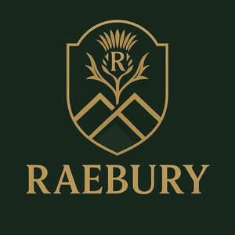
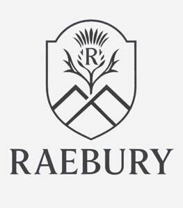
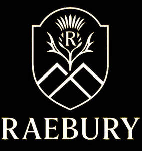
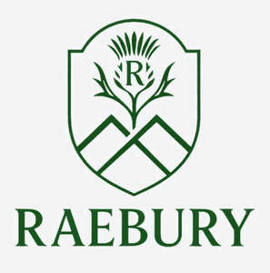
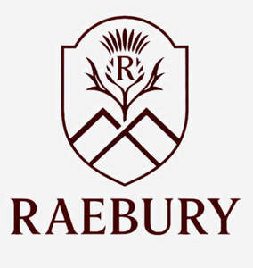
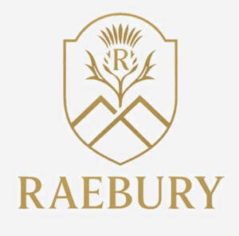

Trade Mark Journal No.2025/025 20 June 2025
UK00004215324 6 June 2025 (18,25)
Mark 1

Mark 2

Mark 3

Mark 4

Mark 5

Mark 6

- Class 18
- Handbag straps; Clutch purses [handbags]; Handbags; Clutch handbags; Leather handbags; Handbags, purses and wallets; Fashion handbags; Tote bags; Leather purses; Crossbody bags; Carry-all bags; Purses [leatherware]; Cross-body bags; Straps for handbags; Clutch purses; Purses; Leather bags and wallets; Handbags for ladies; Ladies handbags; Leather coin purses; Pocketbooks [handbags]; Cosmetic purses; Leather bags; Shoe bags; Handbags made of leather; Travelling bags [leatherware]; Slouch handbags; Duffle bags; Toiletry bags; Imitation leather bags; Clutches [purses]; Evening handbags; Small clutch purses; Clutch bags; Leather suitcases; Purse frames; Purses, not of precious metal [handbags]; Carry-on bags; Card wallets [leatherware]; Luggage bags; Makeup bags; Make-up bags; Travelling bags made of imitation leather; Straps for coin purses; Leather wallets; Briefcases [leatherware]; Leather luggage straps; Handbags made of imitations leather; Multi-purpose purses; Cosmetic bags; Carrying bags; Gentlemen's handbags; Carryalls; Garment bags; Tool bags of leather, empty; Belt bags and hip bags; Travelling bags made of leather; Leather pouches; Pouches of leather; Leather briefcases; Luggage tags [leatherware]; Luggage, bags, wallets and other carriers; Coin purses; Handbags for men; Textile shopping bags; Pocket wallets; Wallets (Pocket -); Wash bags for carrying toiletries; Bags; Purses, not made of precious metal [handbags]; Leather luggage tags; Gent's handbags; Leather for shoes; Bags made of imitation leather; Satchels; Umbrella bags; Evening purses; Bags made of leather; Bags for clothes; Sling bags; Souvenir bags; Small purses; Toiletry bags sold empty; Waterproof bags; Belt bags; Travelling bags; Bum bags; Mesh shopping bags; Umbrellas; Umbrellas for children; Luggage covers.
- Class 25
- Clothing; Jackets [clothing]; Knitwear [clothing]; Ready-to-wear clothing; Woolen clothing; Furs [clothing]; Layettes [clothing]; Clothing layettes; Linen clothing; Headbands [clothing]; Headbands for clothing; Gloves [clothing]; Gloves as clothing; Clothes; Aprons [clothing]; Maternity clothing; Jerseys [clothing]; Denims [clothing]; Shorts [clothing]; Cashmere clothing; Capes (clothing); Oilskins [clothing]; Gabardines [clothing]; Leather clothing; Clothing of leather; Leather (Clothing of -); Silk clothing; Collars [clothing]; Parts of clothing, footwear and headgear; Knitted clothing; Hoods [clothing]; Windproof clothing; Embroidered clothing; Wristbands [clothing]; Bandeaux [clothing]; Belts [clothing]; Belts for clothing; Rainproof clothing; Waterproof clothing; Visors [clothing]; Casual clothing; Jackets (Stuff -) [clothing]; Bottoms [clothing]; Clothing for leisure wear; Ready-made clothing; Woven clothing; Infant clothing; Leisure clothing; Ties [clothing]; Clothing for sports; Sports clothing; Drawers [clothing]; Athletic clothing; Clothing for children; Muffs [clothing]; Clothing for babies; Bodies [clothing]; Tops [clothing]; Clothing for infants; Weatherproof clothing; Pockets for clothing; Water-resistant clothing; Fabric belts [clothing]; Beach clothing; Thermal clothing; Handwarmers [clothing]; Cowls [clothing]; Chaps (clothing); Men's clothing; Braces for clothing; Mitts [clothing]; Dance clothing; Shoes; Socks; Slippers.
HEJ Trading LTD